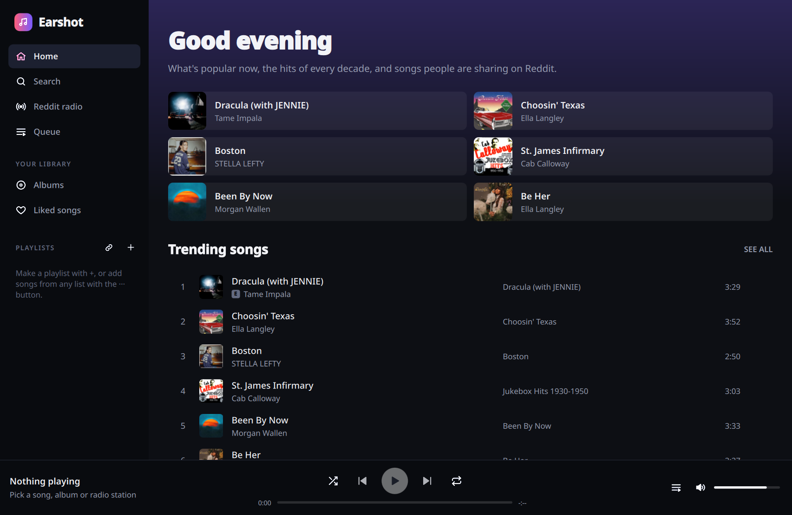
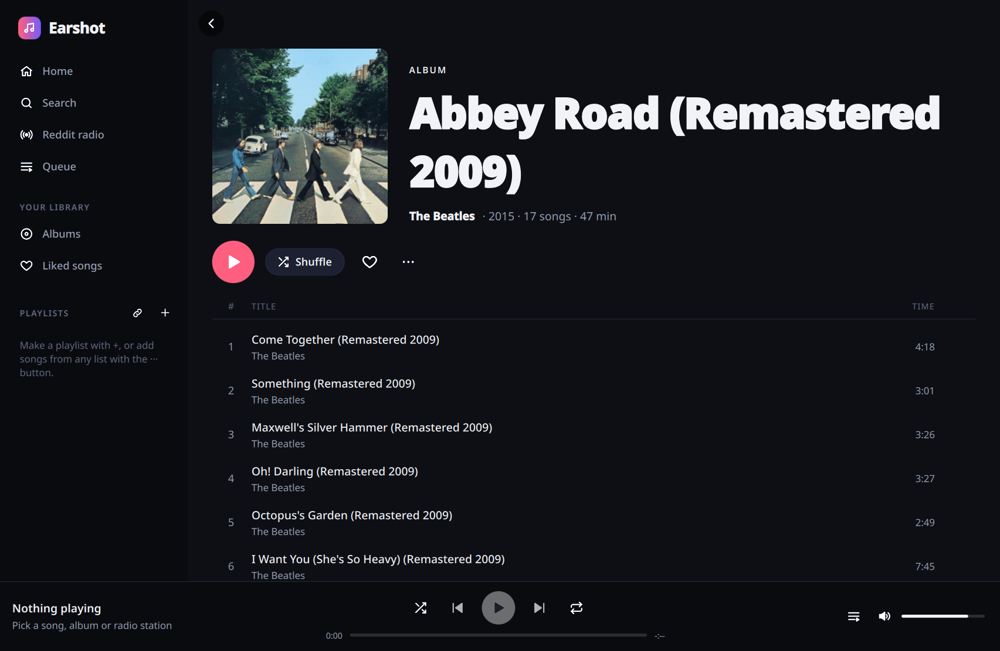
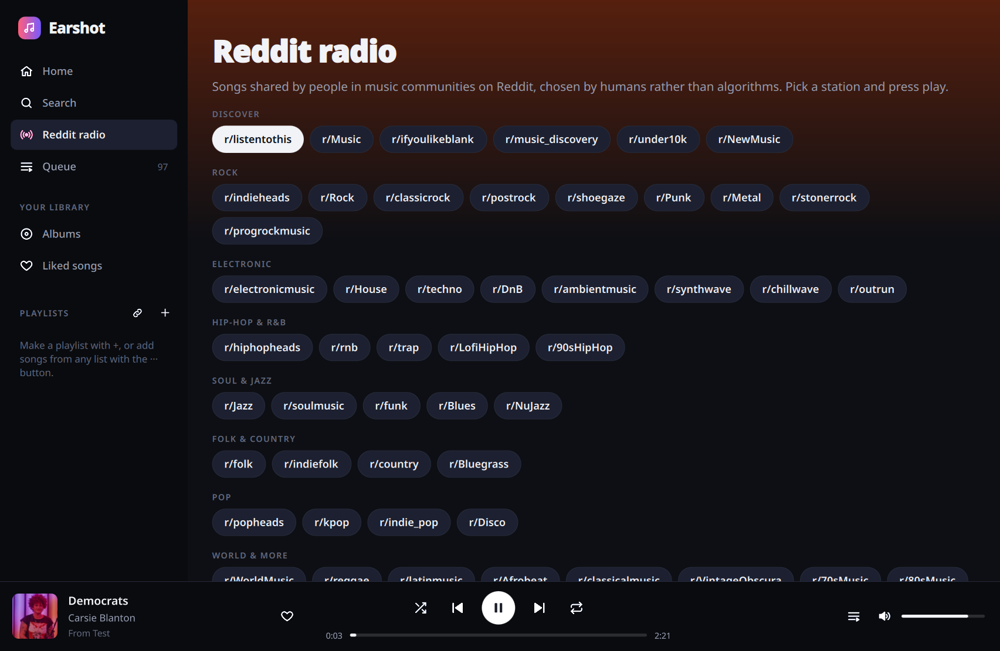

Earshot
A modern desktop music player written in Rust and Qt Quick (cxx-qt), porting the Headset Electron app: popular music by genre and era, a radio made of songs people share on Reddit, and YouTube as the music source, now with real albums, artist pages and playlists.



What it does
Charts by genre and era
Trending songs and albums, charts for 20+ genres and the hits of every decade from the 50s to the 2020s.
Reddit radio
About 50 music subreddits in groups. Songs play in the order the community ranks them; save any station as a playlist.
Albums
Full track lists with artwork, release date, label and running time. Play, shuffle, queue or save any album.
Artists
Popular songs and the full discography: albums, singles and EPs.
Playlists
Create, rename, reorder and filter playlists, keep liked songs, and import a YouTube or SoundCloud playlist or a Bandcamp album from a link.
Search
Songs, albums and artists, plus YouTube, Bandcamp and SoundCloud. YouTube results come in its own order and keep loading as you scroll; soundtrack videos with timestamps open as albums.
Bandcamp tags
Browse Bandcamp by genre or any tag, best-selling, newest or at random, and follow any album's tags to more like it.
Download
Windows
An installer, or a portable zip that runs from any folder.
macOS
A disk image for Apple-silicon Macs, or Homebrew:brew tap benwbooth/earshot https://github.com/benwbooth/earshot then brew install --cask earshot
Linux
Flatpak: flatpak install --user https://benwbooth.github.io/earshot/flatpak/earshot.flatpakref, or an AppImage.
How it works
- Song, album and artist details and artwork come from Deezer's public catalogue.
- Search, playlists and the timestamps of long videos come straight from YouTube, in youtube.com's own order.
- Songs play in YouTube's own player, hidden inside the app as Headset did. Nothing is downloaded, and the next songs are looked up ahead of time so they start at once. Videos whose owners don't allow embedded players play on youtube.com's own page instead, hidden the same way.
- Bandcamp songs stream from Bandcamp itself, and SoundCloud songs play in SoundCloud's own player, hidden the same way.
- The waveform moves with what your speakers actually play, on Windows, macOS and Linux.
- Playlists, liked songs and saved albums are kept on your computer.